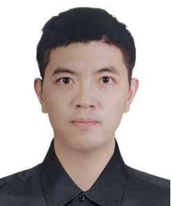

Free boundary & interface problems
Modeling and efficient simulation of moving interfaces, including sharp- and diffuse-interface descriptions.
- Solid-state dewetting
- Interface tracking
Numerical analysis · scientific computing
I am Quan Zhao (赵泉), a Research Professor in the Department of Mathematics at the University of Science and Technology of China. My research develops structure-preserving numerical methods for interface dynamics, geometric evolution equations, and multiphase flows.

Department of Mathematics · USTC
01 · About
My work lies at the intersection of applied mathematics, numerical analysis, and scientific computing. I am particularly interested in mathematical models whose geometry changes over time—and in algorithms that preserve the physical and geometric structure of those models at the discrete level.
Before joining USTC, I was a Humboldt postdoctoral fellow in Harald Garcke’s group at the University of Regensburg. I received my Ph.D. in Applied Mathematics from the National University of Singapore under the supervision of Weizhu Bao and Weiqing Ren.
02 · Research
Reliable numerical methods for complex interfacial phenomena across materials, fluids, and geometric evolution.
Modeling and efficient simulation of moving interfaces, including sharp- and diffuse-interface descriptions.
Structure-preserving approximations for curvature-driven flows, surface diffusion, and evolving networks.
Numerical methods for two- and multiphase flows with moving contact lines, surfactants, and triple junctions.
Analysis and implementation of robust numerical schemes that respect conservation laws and variational structure.
03 · Publications
H. Garcke, R. Nürnberg, and Q. Zhao
arXiv:2407.18529M. Li and Q. Zhao
Vol. 497, 112632
H. Garcke, R. Nürnberg, and Q. Zhao
arXiv:2305.19434H. Garcke, R. Nürnberg, and Q. Zhao
arXiv:2212.0839804 · Experience
Department of Mathematics, University of Science and Technology of China
Department of Mathematics, University of Regensburg
Department of Mathematics, National University of Singapore
Department of Mathematics, National University of Singapore
National University of Singapore
University of Science and Technology of China
2021–2023 · Germany
05 · Contact
For research collaboration, academic visits, or student opportunities, the best way to reach me is by email.
Department of Mathematics
University of Science and Technology of China
Hefei, China